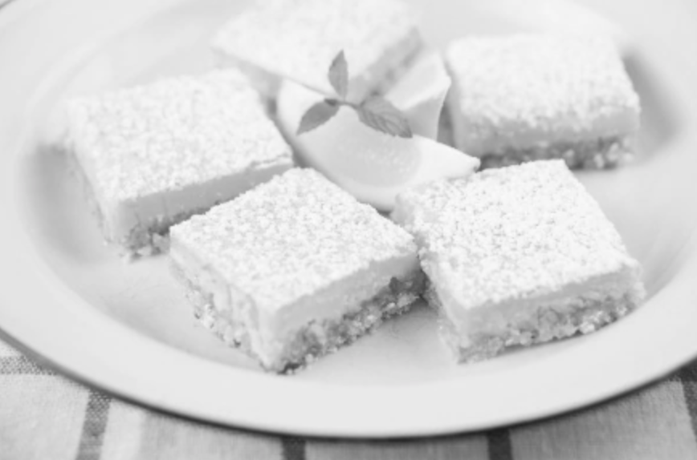

I chose to present this recipe because my mother baked these squares every year.
I wanted to share the joy and the mouth-watering taste.

Ingredients
1 cup butter, softened
1/2 cup white sugar
2 cups all-purpose flour
4 eggs
1 1/2 cups white sugar
1/4 cup all-purpose flour
2 lemons, juiced
Directions
Preheat oven to 350 degrees F (175 degrees C).
In a medium bowl, blend together softened butter, 2 cups flour and 1/2 cup sugar. Press into the bottom of an ungreased 9x13 inch pan.
Bake for 15 to 20 minutes in the preheated oven, or until firm and golden. In another bowl, whisk together the remaining 1 1/2 cups sugar and 1/4 cup flour. Whisk in the eggs and lemon juice. Pour over the baked crust.
Bake for an additional 20 minutes in the preheated oven. The bars will firm up as they cool. For a festive tray, make another pan using limes instead of lemons and adding a drop of green food coloring to give a very pale green. After both pans have cooled, cut into uniform 2 inch squares and arrange in a checker board fashion.